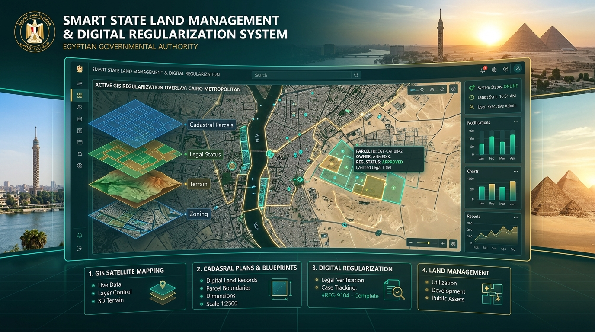

التقرير التنفيذي الاستراتيجي لمتابعة
منظومة تقنين أراضي الدولة
عرض تحليلي مفصل ومقروء إدارياً لقياس نتائج المعاينات الميدانية الكلية (2,241 حالة)، وتحديثات طلبات المنصة الوطنية 168 لسنة 2025، ومتابعة تحويل الممتنعين (922 حالة) عبر الأقاليم الستة مع حزمة التكليفات العاجلة.

الموقف العام الشامل لنتائج معاينات منظومة التقنين (2,241 حالة)
التصنيف الفني الكلي لجميع حالات المخالفات التي تم الانتهاء من إجراء المعاينة الميدانية الكاملة لها بنسبة إنجاز 100%
التوزيع النسبي الكلي لنتائج المعاينة (2241)
توزيع الحالاتالبيان الإحصائي الكلي والتوجيه الإداري
مؤشر الصلاحية| التصنيف الفني | العدد الإجمالي | النسبة المئوية | المسار الإداري |
|---|---|---|---|
| صالحة للتقنين والتعاقد | 1,264 حالة | 56.4% | إبرام العقود وتحصيل الرسوم ومقابل الانتفاع |
| غير صالحة للتعاقد | 977 حالة | 43.6% | إجراءات الإزالة الفورية والمحاضر والحجز الإداري |
| الإجمالي العام للمعاينات | 2,241 حالة | 100% | اكتمال أعمال المعاينة الميدانية لكافة الحالات |
تفكيك وتحليل موقف الحالات الصالحة للتعاقد (1,264 حالة)
المقارنة الدقيقة بين العقود المبرمة فعلياً والمواطنين الممتنعين المستهدفين باجتماعات الإرشاد
مقارنة حجم العقود المنجزة مقابل الممتنعين
فجوة التحصيلتفصيل الموقف التنفيذي للحالات الصالحة
تحليل الأداء| الموقف الراهن | العدد | النسبة من الصالح | الإجراء المتبع والمطلوب |
|---|---|---|---|
| عقود تم إبرامها بالفعل | 342 عقداً | 27.1% | متابعة سداد الأقساط الدورية والالتزام ببنود العقد |
| ممتنعون عن التعاقد | 922 حالة | 72.9% | حملات إرشادية مكثفة وإنذارات رسمية بالسحب والإزالة |
الموقف الإجرائي الكلي للحالات غير الصالحة للتعاقد (977 حالة)
حصر مسارات التعامل القانوني والميداني مع التعديات غير القابلة للتقنين لضمان استرداد أصول ومصارف الدولة
توزيع الإجراءات الميدانية والقانونية المتخذة
حجم القراراتالبيان التفصيلي للإجراءات المتخذة (977)
قرارات الحسم| طبيعة الإجراء التنفيذي | العدد | النسبة | الأثر الميداني والقانوني |
|---|---|---|---|
| إجراء قانوني (محاضر / قرارات) | 764 | 78.2% | تحرير محاضر إثبات مخالفة واستصدار قرارات إزالة رسمية |
| إزالة فعلية للمخالفة | 185 | 18.9% | تنفيذ الإزالة على الأرض واسترداد الأرض للدولة بالكامل |
| إعادة نظر (أصبحت صالحة) | 28 | 2.9% | استيفاء الشروط بعد المعاينة المستجدة ونقلها لمسار التعاقد |
التفصيل النوعي للإجراءات المتخذة حيال الـ (977 حالة غير صالحة)
الشرح الإداري والقانوني الدقيق لكل مسار إجرائي وآليات التنفيذ المتبعة على الأرض
محاضر وقرارات إزالة رسمية
الإجراء المتبع: تم تحرير محاضر إثبات التعدي ومخالفة القانون، واستصدار قرارات إزالة نهائية معتمدة، مع إخطار الأجهزة الأمنية والمحليات لإدراجها في موجات الإزالة المتتالية، ومطالبة المخالفين بمقابل الانتفاع بالحجز الإداري.
إزالة فعلية للمخالفة والتعدي
الإجراء المتبع: تم تنفيذ الإزالة على الطبيعة بالتنسيق مع قوات إنفاذ القانون والمعدات الميكانيكية التابعة للهيئة، وإعادة جسور ومنافع المصارف إلى حالتها الأصلية لمنع إعاقة تدفق مياه الصرف الزراعي أو التأثير على كفاءة الشبكة.
إعادة نظر وأصبحت صالحة للتعاقد
الإجراء المتبع: بناءً على التظلمات المقدمة وإعادة الفحص المساحي الميداني الدقيق وتعديل الوضع المكاني بما لا يتعارض مع منافع الصرف، تقرر تصحيح تصنيف هذه الحالات ونقلها رسمياً إلى جدول الحالات الصالحة لإبرام العقود.
منظومة المنصة الوطنية الجديدة (القانون رقم 168 لسنة 2025)
مسار معالجة الطلبات الواردة حديثاً عبر المنصة الوطنية الموحدة ومؤشرات التدفق الرقمي
مسار الطلبات بالمنظومة الجديدة (4 طلبات مسجلة)
دورة المعاملة الرقميةالموقف النسبي لطلبات المنصة
الحالة الفعليةموقف الموافقات مع المساحة العسكرية ومقارنة المنظومة 168/2025
متابعة تفصيلية لحالات التعاقد الـ 3 بالمنصة الجديدة والمزايا التقنية والإجرائية المكتسبة
موقف موافقات هيئة المساحة العسكرية (3 حالات)
تتبع الموافقاتتم ورود موافقة هيئة المساحة العسكرية بشأنها بنجاح، وجارٍ استكمال إجراءات توقيع العقد وسداد الرسوم المقررة.
تم إرسال الإحداثيات والرفع المساحي للهيئة، وبانتظار ورود إفادة المساحة العسكرية لاستكمال المسار التعاقدي.
| بيان الطلب بالمنصة | العدد | الموقف التنفيذي الراهن |
|---|---|---|
| موافقة مساحة عسكرية معتمدة | 1 | جاهزة للتعاقد النهائي |
| قيد انتظار المساحة العسكرية | 2 | متابعة إلكترونية مستمرة |
| مخالفة تم حسم إزالتها | 1 | تمت الإزالة الفعلية |
القيمة المضافة للمنظومة الجديدة (168 لسنة 2025)
مزايا التحول الرقميركائز المنظومة الجديدة (168/2025)
- الرفع الإحداثي الدقيق: استخدام خرائط GIS الموحدة لمنع التداخل والازدواجية.
- الربط السيادي الإلكتروني: تسريع موافقات المساحة العسكرية عبر منصة وطنية واحدة.
- الحوكمة ومنع التلاعب: إصدار باركود وكارت وصف رقمي مشفر لكل قطعة أرض.
الهدف الاستراتيجي للمرحلة القادمة
- تحويل كافة ملفات التقنين القديمة تدريجياً إلى المنصة الرقمية الموحدة.
- تقليص زمن دورة المعاينة والبت من شهور إلى أيام معدودة.
متابعة قسم الإرشاد لتحويل الممتنعين (922 حالة) بالأقاليم الستة
المؤشرات الإجمالية للاجتماعات الإرشادية والتفاعل الميداني للمواطنين الممتنعين عبر قطاعات الجمهورية
تفاعل الأقاليم في جلسات الإرشاد والتوقيع
مؤشر الاستجابةالتوزيع الكلي لجهود الإرشاد بالأقاليم الستة
6 أقاليم جغرافية| الإقليم الجغرافي | الإدارة التابعة | الموقف ومستوى التفاعل |
|---|---|---|
| 1. القناة وسيناء | صرف الإسماعيلية | استجابة وتوقيع (1 تم + 1 قريباً) |
| 2. مصر الوسطى | جنوب وشمال الجيزة | توقيع 5 بجنوب الجيزة / امتناع بشمال الجيزة |
| 3. شرق الدلتا | شمال الدقهلية والشرقية | موافقة 19 بالدقهلية بعد فصل الحد + 1 توقيع |
| 4. مصر العليا | صرف جنوب قنا | رفض تام من 17 مواطناً (يتطلب حسم) |
| 5. وسط الدلتا | غرب المنوفية وشرق كفر الشيخ | طلب مهل تفكير في 3 اجتماعات |
| 6. غرب الدلتا | صرف شمال البحيرة | تفاوض على مدة 5 سنوات وحسم التسعير |
الموقف الميداني: القناة وسيناء، مصر الوسطى، وشرق الدلتا
النتائج التفصيلية لاجتماعات الإرشاد وعدد الحالات المستهدفة والموقعة بتلك الأقاليم
إقليم القناة وسيناء
استجابة 100%- 1 حالة: تم توقيع العقد الفعلي وسداد الرسوم.
- 1 حالة: تم الاتفاق وجارٍ التوقيع في القريب العاجل.
إقليم مصر الوسطى
تفاعل متباين- جنوب الجيزة (10): تم توقيع 5 عقود + 5 قيد التفاوض.
- شمال الجيزة (20): لا توجد موافقة تامة ومماطلة في التوقيع.
إقليم شرق الدلتا
موافقة مشروطة- صرف الشرقية: تم توقيع عقد لحالة واحدة مستهدفة.
- شمال الدقهلية (19): موافقة تامة بعد إجراء فصل الحد.
الموقف الميداني: مصر العليا، وسط الدلتا، وغرب الدلتا
النتائج التفصيلية للمفاوضات وحالات الرفض ومهل التفكير بتلك الأقاليم
إقليم مصر العليا
رفض تام- 17 حالة: رفض تام وامتناع قاطع عن التوقيع على العقود.
- الإجراء: توجيه إنذارات بالسحب والإزالة الفورية والحجز الإداري.
إقليم وسط الدلتا
مهلة تفكير- الموقف العام: جميع الحالات طلبت مهلة زمنية للتفكير.
- الإجراء: عقد جلسات متابعة مكثفة قبل انتهاء المهل الرسمية.
إقليم غرب الدلتا
تفاوض نشط- طلب المنتفعين: زيادة مدة التعاقد لتكون 5 سنوات فأكثر.
- التسعير: سرعة حسم واعتماد أسعار التقدير للمتر المربع.
مصفوفة المعوقات الميدانية ومطالب المواطنين والحلول التنفيذية
تحليل التحديات الميدانية الأربعة وحلول الحسم الإداري والفني المعتمدة لرفع معدلات التعاقد
1. مسألة فصل الحد المساحي والتدقيق
المعوق الميداني: تعليق توقيع 19 مواطناً لحين حسم الحدود الفاصلة بدقة بين أراضي الملكية الخاصة ومنافع وأملاك المصارف العامة.
2. اعتماد التسعير وزيادة مدة التعاقد
المعوق الميداني: تأخر حسم أسعار تقدير المتر المربع ومطالبة المنتفعين بمد مدة العقد إلى 5 سنوات فأكثر لضمان الاستقرار الاستثماري والزراعي.
3. حالات الرفض التام والمماطلة
المعوق الميداني: الامتناع القاطع عن التوقيع رغبة في استمرار وضع اليد دون أداء مستحقات الدولة ومقابل الانتفاع القانوني.
4. طلب مهل تفكير وتردد في التعاقد
المعوق الميداني: تردد المواطنين وطلب وقت إضافي قبل الالتزام بسداد مقدمات التعاقد والأقساط المقررة قانوناً.
التكليفات العاجلة وخطة العمل الإلزامية لمديري عموم الأقاليم
حزمة توجيهات حاسمة ومحددة الأهداف والمسؤوليات لتحقيق المستهدفات وحماية الأصول وتعظيم الموارد
لجان المرور وكارت الوصف الشامل
تشكيل لجان مرور ميدانية فورية ومستمرة على جميع حالات التعدي، مع إلزام كل إدارة بإصدار "كارت وصف كامل وشامل ومميكن" لكل قطعة من أملاك الصرف يتضمن (المساحة الدقيقة، الإحداثيات، طبيعة الاستغلال، والشاغل الفعلي).
تحقيق مستهدفات التراخيص والإزالة
إلزام مديري عموم الأقاليم بتحقيق المستهدف الرقمي المطلوب للتراخيص وتحصيل رسوم مقابل الانتفاع، مع رفع معدلات تنفيذ قرارات إزالة المخالفات غير القابلة للتقنين بالتنسيق مع الجهات المعنية وفق جدول زمني حاسم.
حصر وطرح الأراضي المميزة في مزايدات
إعداد بيان شامل وتفصيلي بقطع الأراضي المميزة الفضاء أو القابلة للاستثمار التي تقع بولاية الهيئة، وتجهيز كراسات الشروط لطرحها في مزايدات عامة علنية للجمهور وأصحاب المصلحة لتعظيم الإيرادات الذاتية للدولة.
خلاصة التوصيات الإدارية الحاكمة:
اعتماد التنسيق التام بين لجان الإرشاد وفرق الرفع المساحي بالدقهلية، وسرعة حسم التسعير بالبحيرة، وتوجيه الإنذارات الرادعة للممتنعين بقنا وشمال الجيزة مع الربط المباشر بكروت الوصف الرقمية مع المنصة الوطنية 168 لسنة 2025.